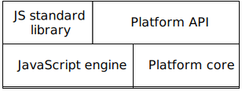

In this chapter, I’d like to paint the big picture: what are you learning in this book, and how does it fit into the overall landscape of web development?
6.1 What are you learning in this book?
This book teaches the JavaScript language. It focuses on just the language, but offers occasional glimpses at two platforms where JavaScript can be used:
Web browser
Node.js
Node.js is important for web development in three ways:
You can use it to write server-side software in JavaScript.
You can also use it to write software for the command line (think Unix shell, Windows PowerShell, etc.). Many JavaScript-related tools are based on (and executed via) Node.js.
Node’s software registry, npm, has become the dominant way of installing tools (such as compilers and build tools) and libraries – even for client-side development.
6.2 The structure of browsers and Node.js
Figure 2: The structure of the two JavaScript platforms web browser and Node.js. The APIs “standard library” and “platform API” are hosted on top of a foundational layer with a JavaScript engine and a platform-specific “core”.
The structures of the two JavaScript platforms web browser and Node.js are similar (fig. 2):
The foundational layer consists of the JavaScript engine and platform-specific “core” functionality.
Two APIs are hosted on top of this foundation:
The JavaScript standard library is part of JavaScript proper and runs on top of the engine.
The platform API are also available from JavaScript – it provides access to platform-specific functionality. For example:
In browsers, you need to use the platform-specific API if you want to do anything related to the user interface: react to mouse clicks, play sounds, etc.
In Node.js, the platform-specific API lets you read and write files, download data via HTTP, etc.
6.3 JavaScript references
When you have a question about a JavaScript, a web search usually helps. I can recommend the following online sources:
MDN web docs: cover various web technologies such as CSS, HTML, JavaScript, and more. An excellent reference.
ExploringJS.com: My other books on JavaScript go into greater detail than this book and are free to read online. You can look up features by ECMAScript version: